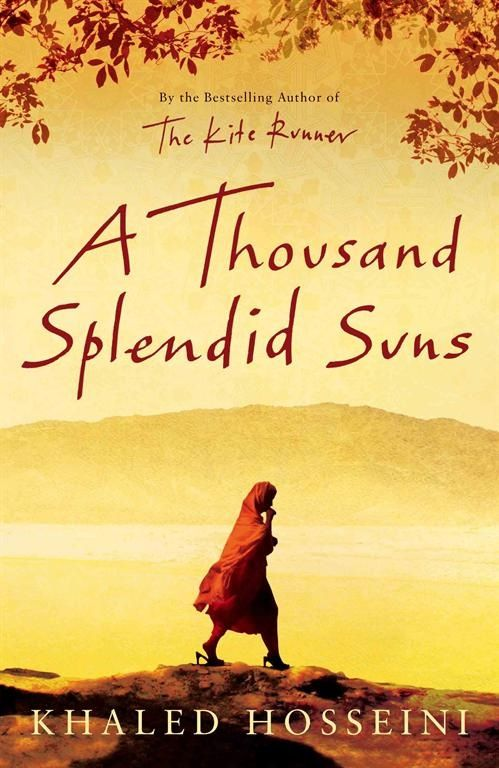

A Thousand Splendid Suns by Khaled Hosseini
This broke me in every possible way. As a muslim women who is praying for afghan women everyday, this was a book I never want to read again, but I believe everyone should read once in their life.